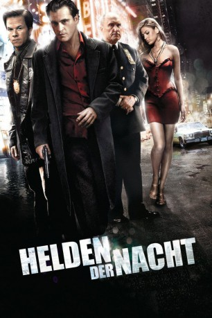
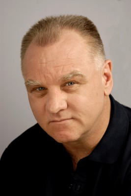

#4503 Helden der Nacht - We Own the Night
Alternativ: We Own the Night
 
 IMDB-Wertung: 6.9 / 10
IMDB-Wertung: 6.9 / 10  Metascore: 0
Metascore: 0 
Ein Mann. Zwei Welten. Eine Entscheidung. Sex, Drogen und Alkohol - für den New Yorker Nachtclub-Manager Bobby Green und seine Freundin Amanda ist das Leben eine einzige Party. Bobby träumt davon, eines Tages seinen eigenen Club zu besitzen. Dafür drückt er beide Augen zu, wenn die Russen-Mafia den Club für Drogengeschäfte nutzt. Und nur Amanda weiß, dass sein Vater und sein Bruder Joseph erfolgreiche Polizisten sind. Nach einem Mordanschlag auf Joseph steht Bobby zwischen den Fronten eines Drogenkriegs und muss sich entscheiden: Bringt er gemeinsam mit seinem Vater die brutalen Attentäter zur Strecke oder wird er Mitglied im größten Mafiaring, den es in New York je gab?
Jahr: 2007
Dauer: 117 Minuten
FSK: 16
Land: USA Studio: Columbia PicturesTonspuren: DTS - ,
Untertitel: Deutsch,
Auflösung: 1080p (1920x1040) Größe: 7219 MB
Genre: Thriller, Drama, Krimi
Regisseur: James Gray
Drehbuch: Margaret Mitchell
Soundtrack:
Darsteller:
 Joaquin Phoenix als Bobby Green
Joaquin Phoenix als Bobby Green Eva Mendes als Amada Juarez
Eva Mendes als Amada Juarez Danny Hoch als Jumbo Falsetti
Danny Hoch als Jumbo Falsetti Alex Veadov als Vadim Nezhinski
Alex Veadov als Vadim Nezhinski Oleg Taktarov als Pavel Lubyarsky
Oleg Taktarov als Pavel Lubyarsky Dominic Colón als Freddie
Dominic Colón als Freddie Joseph D'Onofrio als Bloodied Patron
Joseph D'Onofrio als Bloodied Patron- Elena Solovey als Kalina Buzhayev
 Moni Moshonov als Marat Buzhayev
Moni Moshonov als Marat Buzhayev Mark Wahlberg als Joseph Grusinsky
Mark Wahlberg als Joseph Grusinsky- Maggie Kiley als Sandra Grusinsky
 Paul Herman als Spiro Giavannis
Paul Herman als Spiro Giavannis Robert Duvall als Burt Grusinsky
Robert Duvall als Burt Grusinsky Antoni Corone als Michael Solo
Antoni Corone als Michael Solo- Craig Walker als Russell De Keifer
- Claudia Lopez als Claudia
 Scott Nicholson als Nat the Cop
Scott Nicholson als Nat the Cop-  Robert C. Kirk als Sergeant Provenzano
- Al Linea als Portly Cop
 Teddy Coluca als Uniformed Cop #1
Teddy Coluca als Uniformed Cop #1- Ed Koch als Mayor
 Mike Massimino als Hospital Guard
Mike Massimino als Hospital Guard Sharon Wilkins als Nurse
Sharon Wilkins als Nurse- Ross Brodar als Tattooed Man
- Francis Toumbakaris als Slavic Youth
- Hoon Lee als Emergency Services Driver
 Barbara Ann Davison als Neighbor Lady
Barbara Ann Davison als Neighbor Lady- Tony Guida als Vitt the Guard
- Robert McKay als Riker's Desk Guard
 Blaise Corrigan als Uniformed Police Officer
Blaise Corrigan als Uniformed Police Officer- Karl Bury als Random Cop
 Coati Mundi als Himself
Coati Mundi als Himself- Joe Forbrich als Guard
- Richard Petrocelli als Tough Looking Cop
- Nik Pjeternikaj als Albanian Drug Lord
 Jamal Weathers als Parabolic Engineer
Jamal Weathers als Parabolic Engineer Elliot Santiago als El Caribe Bouncer #1
Elliot Santiago als El Caribe Bouncer #1 Jeff Ward als El Caribe Bouncer #2
Jeff Ward als El Caribe Bouncer #2- Christopher Place als El Caribe Party Patron #1
- Samantha MacIvor als El Caribe Party Patron #2
- Aaron Vexler als El Caribe Party Patron #4
 Patrick M. Walsh als Eli Bodyguard
Patrick M. Walsh als Eli Bodyguard- Salvatore Inzerillo als Police Reporter
- Ava Lee Scott als Veronica
- Douglas J. Aguirre als Bobby Green's Bodyguard , uncredited
- Ashley Avis als Vadim's Girlfriend , uncredited
- James Balsamo als Club Dancer , uncredited
- John Borras als Riker's Prison Guard , uncredited
- Mike Burke als Pavel's Driver , uncredited
- J.W. Cortes als Bouncer Cortez , uncredited
Datei: X:\2007(G-M)\Helden der Nacht - We Own the Night (2007, FSK16, 1920x1040).mkv seit 29.09.2016
Festplatte: HD 2007(A-Z)-2008(A-F)
 Es gibt insgesamt 64 Filme in der Gruppe '2007(G-M)'
Es gibt insgesamt 64 Filme in der Gruppe '2007(G-M)'